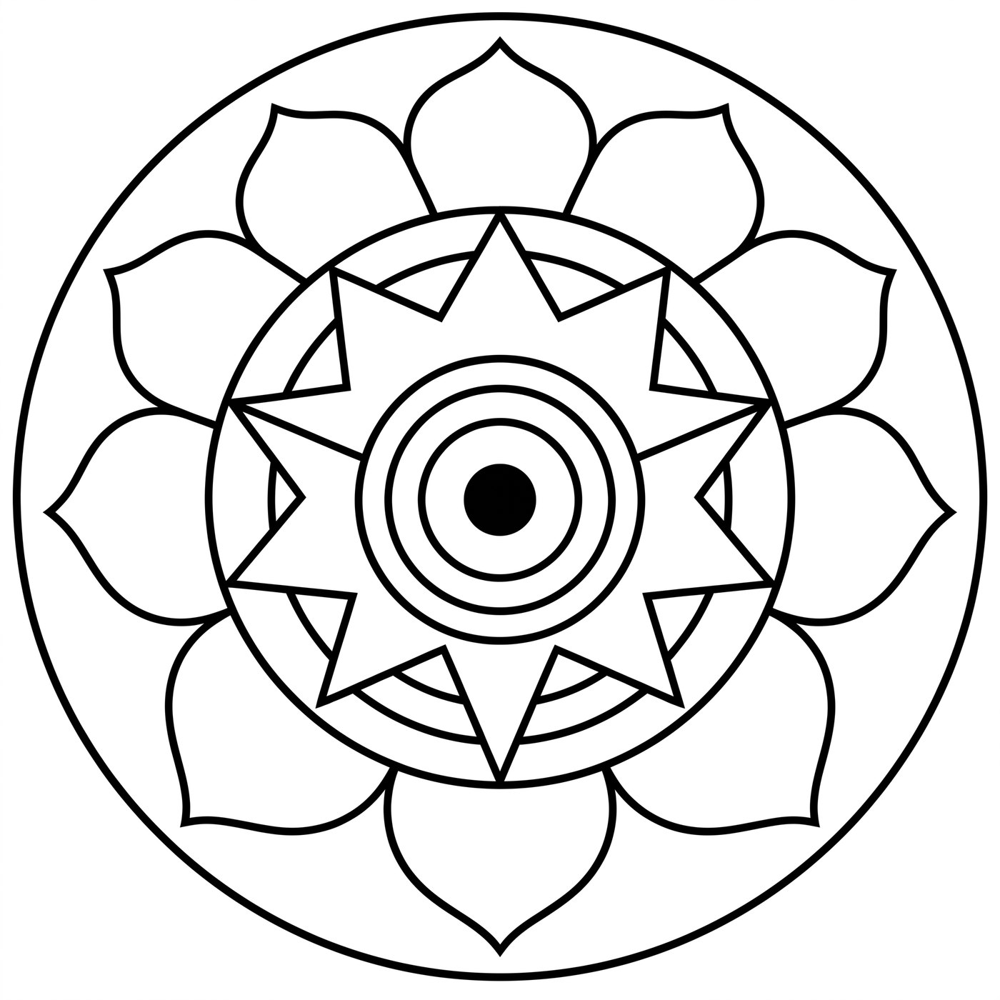
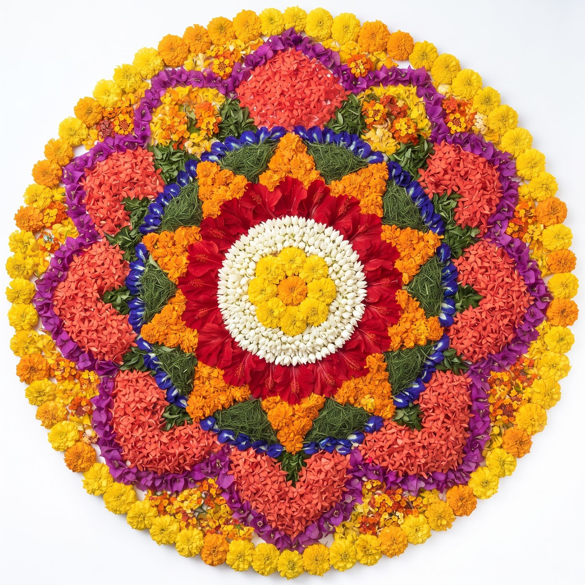

Welcome to My Pookalam
Scroll down to watch the pookalam bloom.
Scroll

The Outline
തുടക്കം
Every pookalam begins as an empty circle — a quiet invitation for the flowers to arrive, one ring at a time.
Happy Onam
May this Onam bring joy, prosperity and togetherness — to your home, and to everyone gathered around it.
Did you enjoy this pookalam?
Let us know — it helps us make next year's a little more beautiful.